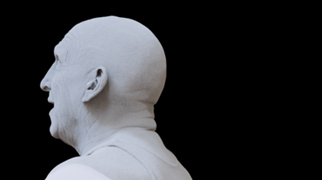
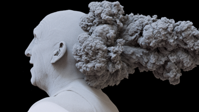
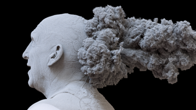
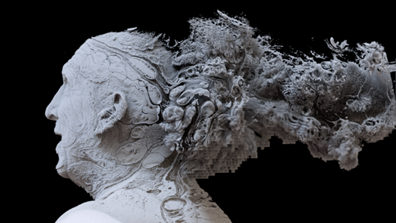
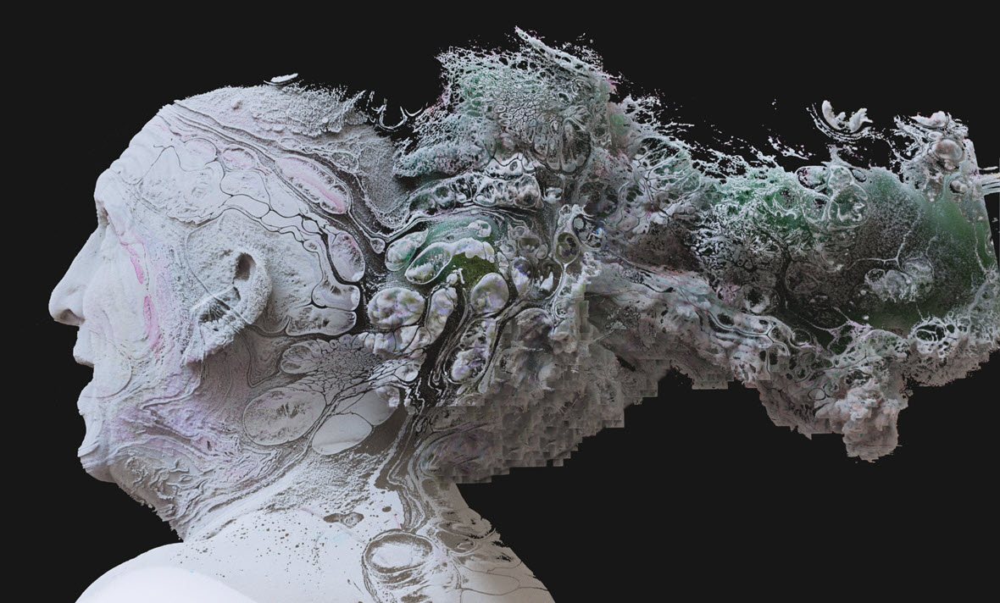
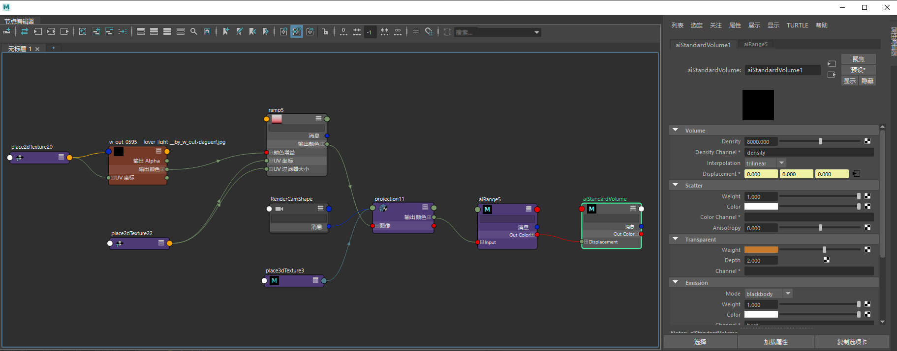

将多边形网格渲染为体积
我们可以将多边形网格对象渲染为体积。这提供了许多创意机会，以各种各样有趣的方式渲染实体对象。这个简短的制作教程介绍了如何使用 standard_volume 着色器的“置换”(Displacement)属性，将一个多边形网格和一个体积的着色合并在一起，以实现组合它们的效果。
有关演示此着色效果的简化场景，请单击此处。
注意：
多边形网格应闭合且没有任何自交，否则体积可能无法正确渲染。
步长
- 首先，我们需要将头部网格转化为体积。选择网格，然后在它的 Arnold 属性中，将 step_size 增大到 0.1。当 step_size 为正值时，会将多边形网格渲染为体积，其值将用作光线行进体积时的基准步长。
注意：
有关体积 step_size 的详细信息，请单击此处。
标准体积

多边形网格渲染为体积
提示：
必须添加 step_size 值并指定 standard_volume 着色器，以便将网格渲染为体积。
体积填充
下一步是使用填充功能扩大体积。这在我们要使用纹理置换体积时非常有用。请注意，这种松弛不仅适用于边界框，还适用于边界框内的光线范围所使用的体素。本例中使用的量较小，只有 0.05。
为了获得最佳性能，应将它设置得尽可能低，同时仍覆盖最大置换量。
体积
- 接下来，在头的后部放置 Arnold 体积，并为它指定相同的 standard_volume 着色器。在本例中，使用的是烟 .vdb 文件。
或者，您也可以使用一个不同的网格，并对其应用与头部相同的着色器。目的是为置换纹理过程准备看起来复杂的效果。

使用相同的 standard_volume 着色器渲染的体积
置换纹理（标准体积着色器）
- 将一个文件纹理连接到 standard_volume 着色器的“置换”(Displacement)属性。在本例中，使用了摄影机投影。我们可以看到纹理的效果（主要在头部），但需要让效果更明显。
c
置换纹理隐约可见
范围着色器
- 我们可以使用范围着色器重映射文件纹理的输入值，让效果更加夸张。将文件纹理连接到范围着色器的“输入”(Input)属性，然后将范围*着色器连接到 *standard_volume 着色器的“置换”(Displacement)属性。将范围*着色器的 *output_max 值增大到 8 左右。现在您应该开始真正看到文件纹理对体积置换产生的效果。

范围着色器使置换纹理变得更加明显
- 最后，如果要添加一些颜色，您可以尝试将同一文件纹理连接到 standard_volume 着色器的 scatter_color 或 transparent_weight 属性。


最终的着色网络